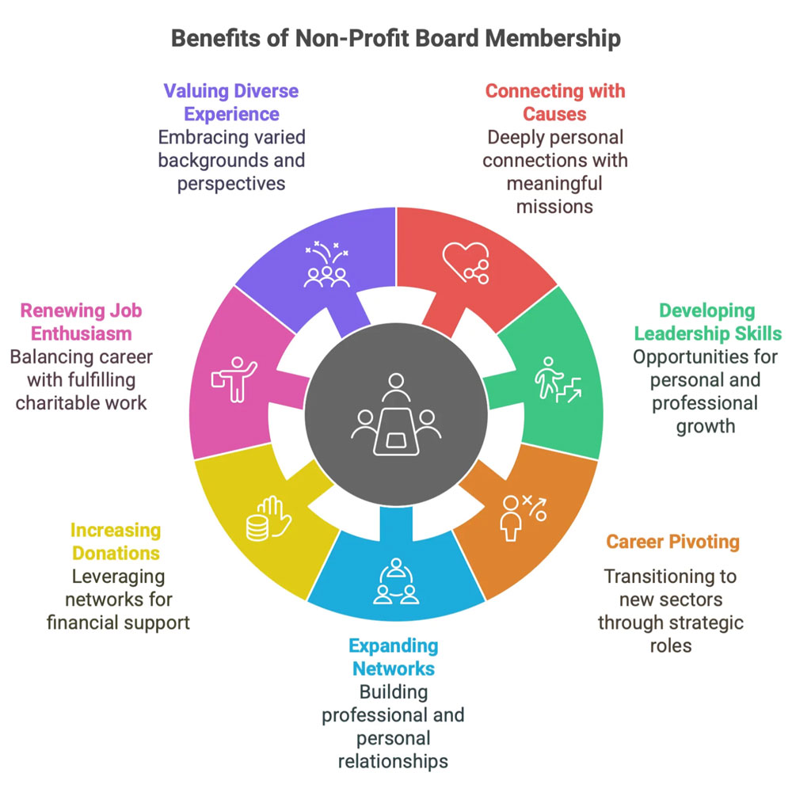

Networking
Start Building Your Professional Community
Networking isn't just about finding a job; it's about building meaningful relationships within the UMSI community and beyond.
Intro to Making Connections
Learn the basics of how to reach out to alumni and professionals in your field of interest.
Practical Tips
The TIARA Method
Use these five topics to guide your informational interviews:
- Trends: What is changing in your field?
- Insights: What has surprised you in your role?
- Advice: What should I focus on as a student?
- Resources: What newsletters or tools do you use?
- Assignments: What projects are most important?
